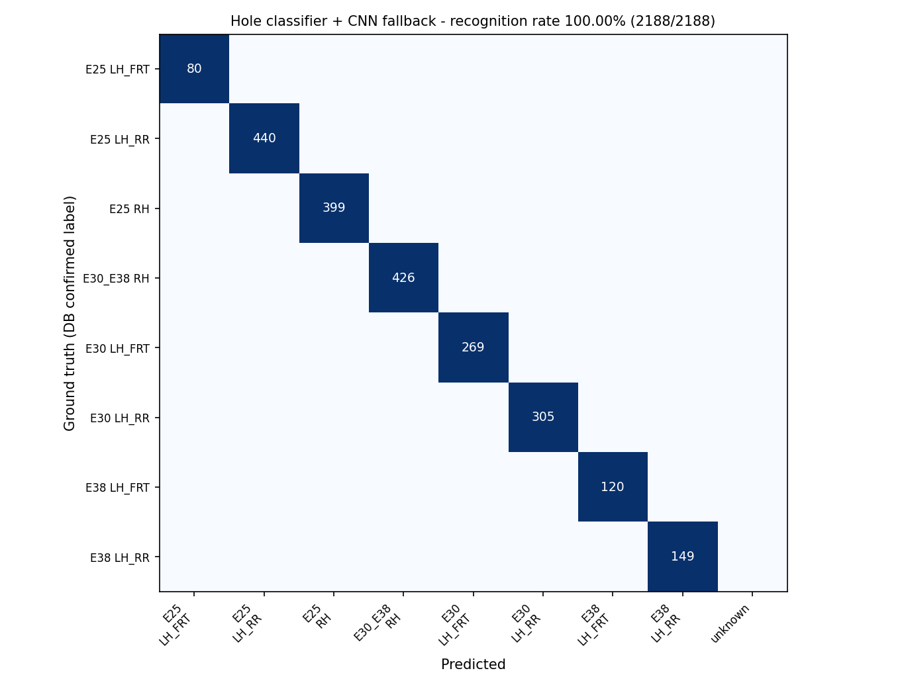
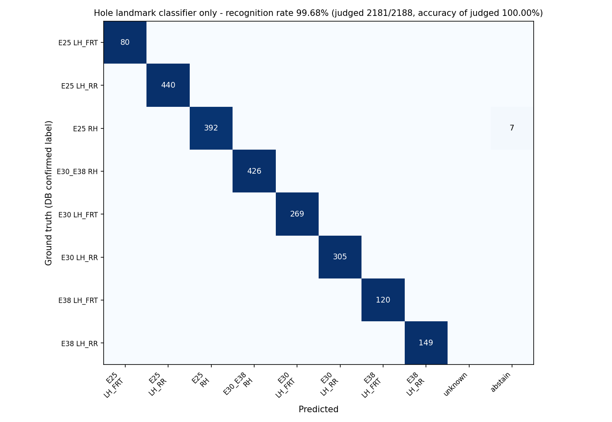

<title>도어 판별 성능지표 입회 시험</title>
<meta name="claude:viewport-fit-sides" content="cover">
<link rel="preconnect" href="https://fonts.googleapis.com"><link rel="preconnect" href="https://fonts.gstatic.com" crossorigin>
<link rel="stylesheet" href="https://fonts.googleapis.com/css2?family=IBM+Plex+Sans+KR:wght@400;500;600;700&family=IBM+Plex+Mono:wght@400;500&display=swap">
<style>
/* 레이아웃: 탭 2개(인식율·위치 오차) + 봉인 탭, 각 탭은 계획서 평가 순서대로 절. 색 = 완료(초록)·당일(노랑)·미달(빨강) */
:root{--bg:#f3f6f5;--surface:#fff;--sunk:#eaf0ee;--ink:#15211e;--ink2:#43524d;--muted:#67756f;--line:#d6dfdb;--accent:#0f6b5f;--accent-soft:#dff0ec;
--good:#1d7a4c;--good-bg:#e1f3e8;--warn:#9a6200;--warn-bg:#fbf0dc;--bad:#b4372b;--bad-bg:#f9e6e3;--s2:#e2672b;
--f-body:"IBM Plex Sans KR","Apple SD Gothic Neo","Malgun Gothic","Noto Sans KR",system-ui,sans-serif;--f-mono:"IBM Plex Mono",ui-monospace,Menlo,Consolas,monospace}
@media (prefers-color-scheme:dark){:root:not([data-theme="light"]){--bg:#101614;--surface:#171e1c;--sunk:#1e2724;--ink:#e4ebe8;--ink2:#b7c3be;--muted:#8b9a94;--line:#2b3632;--accent:#6fcdbd;--accent-soft:#17302b;--good:#5cc995;--good-bg:#16302a;--warn:#e3a849;--warn-bg:#33281a;--bad:#f07a6b;--bad-bg:#3a1f1c;--s2:#e8703a;color-scheme:dark}}
:root[data-theme="dark"]{--bg:#101614;--surface:#171e1c;--sunk:#1e2724;--ink:#e4ebe8;--ink2:#b7c3be;--muted:#8b9a94;--line:#2b3632;--accent:#6fcdbd;--accent-soft:#17302b;--good:#5cc995;--good-bg:#16302a;--warn:#e3a849;--warn-bg:#33281a;--bad:#f07a6b;--bad-bg:#3a1f1c;--s2:#e8703a;color-scheme:dark}
*{box-sizing:border-box}
body{background:var(--bg);color:var(--ink);font-family:var(--f-body);font-size:16px;line-height:1.7;padding-left:max(16px,env(safe-area-inset-left,0px));padding-right:max(16px,env(safe-area-inset-right,0px));padding-block:0 64px}
main,header.top,footer{max-width:980px;margin:0 auto}
header.top{padding-block:36px 18px;border-bottom:1px solid var(--line)}
.eyebrow{font-family:var(--f-mono);font-size:12.5px;letter-spacing:.08em;text-transform:uppercase;color:var(--muted)}
h1{font-size:30px;line-height:1.25;margin:6px 0 10px;font-weight:700;text-wrap:balance}
h2{font-size:21px;margin:40px 0 8px;font-weight:700;text-wrap:balance;scroll-margin-top:16px}
h2 .sn{font-family:var(--f-mono);font-weight:500;color:var(--accent);margin-right:10px;font-size:18px}
p{margin:8px 0 12px;max-width:72ch} .lede{font-size:17px;color:var(--ink2);max-width:70ch}
.meta{display:flex;flex-wrap:wrap;gap:6px 18px;font-size:13.5px;color:var(--muted);margin-top:10px} .meta b{color:var(--ink2);font-weight:500}
a{color:var(--accent)} code{font-family:var(--f-mono);font-size:.88em} .note{font-size:13.5px;color:var(--muted)}
.tabs{display:flex;gap:6px;margin:18px 0 0;flex-wrap:wrap}
.tabs a{text-decoration:none;color:var(--ink2);padding:8px 14px;border:1px solid var(--line);border-bottom:0;border-radius:8px 8px 0 0;background:var(--sunk);font-weight:600;font-size:15px}
.tabs a.on{background:var(--surface);color:var(--accent);border-color:var(--accent)}
.pane{display:none} .pane.on{display:block}
.tw{overflow-x:auto;margin:12px 0 16px;border:1px solid var(--line);border-radius:8px;background:var(--surface)}
table{border-collapse:collapse;width:100%;font-size:14px;line-height:1.5} th,td{padding:8px 11px;text-align:left;vertical-align:top;border-bottom:1px solid var(--line)}
thead th{background:var(--sunk);font-weight:600;color:var(--ink2);font-size:13px;white-space:nowrap} tbody tr:last-child td{border-bottom:0}
td.n,th.n{text-align:right;font-variant-numeric:tabular-nums;white-space:nowrap} caption{caption-side:bottom;text-align:left;padding:8px 11px;font-size:13px;color:var(--muted)} .wide{min-width:760px}
.pill{display:inline-block;font-size:12.5px;font-weight:600;padding:1px 8px;border-radius:999px;white-space:nowrap;line-height:1.6;vertical-align:middle}
.p-ok{background:var(--good-bg);color:var(--good)} .p-mid{background:var(--warn-bg);color:var(--warn)} .p-no{background:var(--bad-bg);color:var(--bad)}
.p-ok::before{content:"● "} .p-mid::before{content:"◐ "} .p-no::before{content:"○ "}
.box{background:var(--surface);border:1px solid var(--line);border-radius:8px;padding:14px 16px;margin:14px 0}
.take{border-left:4px solid var(--s2);padding:2px 0 2px 14px;margin:14px 0;color:var(--ink2)} .take strong{color:var(--ink)}
pre.cmd{background:var(--sunk);border:1px solid var(--line);border-radius:8px;padding:12px 14px;font-family:var(--f-mono);font-size:13px;overflow-x:auto;line-height:1.6}
.charts2{display:grid;grid-template-columns:repeat(2,minmax(0,1fr));gap:12px} .charts2 figure{margin:8px 0;min-width:0}
.shot{background:#fff;border:1px solid var(--line);border-radius:8px;padding:6px} .shot img{display:block;width:100%;height:auto}
figcaption{font-size:13px;color:var(--muted);margin-top:6px} figcaption b{color:var(--ink2)}
details{margin:8px 0} summary{cursor:pointer;color:var(--accent);font-weight:600}
ul.mono-list{font-family:var(--f-mono);font-size:12.5px;columns:2;column-gap:24px;padding-left:18px;max-width:none} ul.mono-list li{margin:1px 0;break-inside:avoid}
ul.check{list-style:none;padding:0;max-width:none} ul.check li{padding:6px 0;border-bottom:1px dashed var(--line)} ul.check input{margin-right:10px;transform:scale(1.15)}
.formula{font-family:var(--f-mono);font-size:14px;background:var(--sunk);border-radius:8px;padding:10px 14px;margin:10px 0;overflow-x:auto}
footer{margin-top:48px;border-top:1px solid var(--line);padding-top:14px;font-size:13px;color:var(--muted)}
:focus-visible{outline:2px solid var(--accent);outline-offset:2px}
@media (max-width:640px){body{font-size:15px} h1{font-size:24px} .charts2{grid-template-columns:minmax(0,1fr)} ul.mono-list{columns:1}}
</style>
<header class="top">
  <div class="eyebrow">굴착기 혼류 생산 과제(25453759) · 공동연구개발기관 4 한국건설기계연구원 · 1단계-2차년도 · 2026-11-06 생성</div>
  <h1>도어 판별 성능지표 입회 시험</h1>
  <p class="lede">계획서의 두 성능지표(6. 부품 인식율, 7. 부품 위치 추정 오차)를 입회자 앞에서 순서대로 보고하는 페이지입니다. 사전에 봉인한 자료와 리허설 결과를 먼저 보이고, 인식율은 같은 명령으로 그 자리에서 다시 실행해 결과를 나란히 붙입니다. 위치 오차는 트래커 측정 기록을 검토하고 라이브 1회로 확인합니다.</p>
  <div class="meta"><span><b>장소</b> 세종 실험실 학습 PC</span><span><b>대상</b> 굴착기 도어(주관기관 협의로 변경)</span><span><b>분할 시드</b> 20261106</span><span><b>리허설</b> rehearsal_20261106</span></div>
  <nav class="tabs" aria-label="탭"><a href="#recognition" data-tab="recognition">6. 부품 인식율</a><a href="#position" data-tab="position">7. 부품 위치 추정 오차</a><a href="#seal" data-tab="seal">봉인 파일 해시</a></nav>
</header>
<main>
<div class="pane" id="pane-recognition">
<section id="r0"><h2><span class="sn">0</span>시험 개요 <span class="pill p-ok">사전</span></h2>
<p>계획서 지표 6 '부품 인식율'의 정의·목표·평가 환경과 우리 구성을 나란히 둡니다. 시험 대상은 2026년 3월 주관기관·명성공업 협의로 굴착기 도어로 정했습니다.</p><div class="tw"><table class=""><thead><tr><th class="">항목</th><th class="">협약계획서(p.11·16·19)</th><th class="">우리 구성</th></tr></thead><tbody><tr><td class="">지표</td><td class="">인식율 = 올바르게 예측된 샘플 ÷ 전체 테스트 샘플(혼동행렬 대각합 / 전체)</td><td class="">같은 정의. 보류(게이트 미통과)도 분모에 포함해 오답으로 처리</td></tr><tr><td class="">목표</td><td class="">1단계-2차년도 80% 이상 (최종 99% 이상, 비중 10%)</td><td class="">사전 리허설 100.00%(하이브리드)</td></tr><tr><td class="">평가자</td><td class="">1단계-2차년도: 공인 시험기관 평가</td><td class="">공인 시험기관 입회 하 재실행 + 사전 봉인 자료 열람</td></tr><tr><td class="">데이터셋</td><td class="">굴착기 부품 획득 이미지 기반, 학습:테스트 70:30 분할, 테스트 셋 추론</td><td class="">명성공업 도어 용접 라인 무인 수집 현장 데이터(동결 372세션 36,770쌍, 세션당 표본 ≤20장). 세션 단위 70:30, 테스트 풀은 두 모델 모두 미학습 세션</td></tr><tr><td class="">대상 부품</td><td class="">굴착기 부품(주관기관 협의로 붐·센터프레임 → 도어로 변경)</td><td class="">굴착기 도어 형상군 8종(E25·E30·E38 앞문·뒷문·우측; E23 은 수집 데이터셋에 없음), 품번 14종은 별도 표</td></tr><tr><td class="">환경</td><td class="">GPU 워크스테이션, Windows/Linux, PyTorch, VS Code</td><td class="">세종 실험실 학습 PC NVIDIA GeForce RTX 5090, Ubuntu, PyTorch 2.9.1+cu130</td></tr></tbody></table></div></section>
<section id="r1"><h2><span class="sn">1</span>데이터셋·모델 봉인 <span class="pill p-ok">사전</span></h2>
<p>테스트에 쓰는 데이터와 모델이 시험 전에 고정돼 있었음을 보이는 자료입니다. 파일 해시는 입회자가 현장에서 다시 계산해 대조합니다.</p><div class="tw"><table class=""><thead><tr><th class="">항목</th><th class="">식별</th><th class="">설명</th></tr></thead><tbody><tr><td class="">동결 데이터셋 (DB door_factory_collect)</td><td class="">372세션, 표본 7,547장 (세션당 ≤20)</td><td class="">NAS 정본 + 학습 PC 미러, 야간 백업(로컬 14개·NAS 30일)</td></tr><tr><td class="">정답(GT) 출처</td><td class="">작업자 버튼 라벨 → 홀 판별기 다수결 대조 → 사람 육안 확인 정정</td><td class="">정정 누적 11세션(전부 판별기 적발), 테스트 세션 중 정정 이력 0건</td></tr><tr><td class="">사람 판단 기록 decisions.csv</td><td class="">sha256 <code>…</code></td><td class="">라벨 정정·무효·분할·레이더 확정·품번, git 추적</td></tr><tr><td class="">홀 랜드마크 판별기(4채널)</td><td class="">sha256 <code>c8e3761d8b5eaf26…</code></td><td class="">실험실 134장 사람 라벨 + 현장 train 세션 의사 라벨(val 검증). test·미분할 세션 미사용</td></tr><tr><td class="">CNN 폴백 seed916</td><td class="">sha256 <code>318893c46669a096…</code></td><td class="">현장 train 127세션(train 105·val 22) 학습, sqrt 가중치 레시피</td></tr><tr><td class="">분할 파일</td><td class="">split_20261106.json · sha256 <code>09f594bca5f18a61…</code></td><td class="">시드 20261106, 생성 2026-11-06 17:37:51</td></tr><tr><td class="">코드</td><td class="">git <code>09c7016</code></td><td class="">tools/cert_split.py · tools/cert_eval.py · 이 페이지 build_cert_report.py</td></tr></tbody></table></div></section>
<section id="r2"><h2><span class="sn">2</span>분할: 학습 70 · 테스트 30 <span class="pill p-ok">사전 · 입회 당일 재추출 가능</span></h2>
<p>세션 단위로 나눕니다. 같은 세션의 프레임이 양쪽에 들어가지 않고, 테스트 풀에는 두 모델 모두 학습에 쓰지 않은 세션만 있습니다. 입회자가 시드를 정하면 같은 규칙으로 다시 뽑습니다.</p>
<p class="note">테스트 풀 = CNN train/val 제외 세션(홀 판별기·4채널 검출기도 현장 train/val 외 세션은 미학습), 클래스 비율대로 시드 추출, 세션당 표본 ≤20장</p>
<div class="tw"><table class=""><thead><tr><th class="">클래스</th><th class="n">전체 세션</th><th class="n">학습측(train/val)</th><th class="n">테스트 풀</th><th class="n">테스트 추출</th><th class="n">테스트 장수</th></tr></thead><tbody><tr><td class="">E25 LH_FRT</td><td class="n">15</td><td class="n">6</td><td class="n">9</td><td class="n">4</td><td class="n">80</td></tr><tr><td class="">E25 LH_RR</td><td class="n">70</td><td class="n">23</td><td class="n">47</td><td class="n">21</td><td class="n">440</td></tr><tr><td class="">E25 RH</td><td class="n">68</td><td class="n">22</td><td class="n">46</td><td class="n">20</td><td class="n">399</td></tr><tr><td class="">E30_E38 RH</td><td class="n">70</td><td class="n">26</td><td class="n">44</td><td class="n">21</td><td class="n">426</td></tr><tr><td class="">E30 LH_FRT</td><td class="n">45</td><td class="n">11</td><td class="n">34</td><td class="n">14</td><td class="n">269</td></tr><tr><td class="">E30 LH_RR</td><td class="n">54</td><td class="n">17</td><td class="n">37</td><td class="n">16</td><td class="n">305</td></tr><tr><td class="">E38 LH_FRT</td><td class="n">21</td><td class="n">10</td><td class="n">11</td><td class="n">6</td><td class="n">120</td></tr><tr><td class="">E38 LH_RR</td><td class="n">29</td><td class="n">12</td><td class="n">17</td><td class="n">9</td><td class="n">149</td></tr><tr><td class="">합계</td><td class="n">372</td><td class="n">127</td><td class="n">245</td><td class="n">111</td><td class="n">2188</td></tr></tbody><caption>시드 20261106 · 테스트 111세션 2,188장 (전체 세션의 30%)</caption></table></div>
<details><summary>테스트 세션 111개 목록</summary><ul class="mono-list"><li><code>20260828/E30_E38_door_RH/s_143127</code> E30_E38 RH · 26장 · 레이더 X</li><li><code>20260828/E38_door_LH_RR/s_122530</code> E38 LH_RR · 8장 · 레이더 X</li><li><code>20260831/E38_door_LH_FRT/s_164555</code> E38 LH_FRT · 20장</li><li><code>20260907/E30_door_LH_RR/s_143122</code> E30 LH_RR · 20장 · 레이더 X</li><li><code>20260909/E30_E38_door_RH/s_082559</code> E30_E38 RH · 20장 · 레이더 X</li><li><code>20260909/E30_door_LH_RR/s_125031</code> E30 LH_RR · 19장 · 레이더 X</li><li><code>20260909/E30_door_LH_RR/s_132535</code> E30 LH_RR · 20장 · 레이더 X</li><li><code>20260910/E25_door_LH_RR/s_095138</code> E25 LH_RR · 20장 · 레이더 O</li><li><code>20260910/E30_door_LH_FRT/s_144140</code> E30 LH_FRT · 20장</li><li><code>20260916/E25_door_LH_RR/s_125051</code> E25 LH_RR · 30장 · 레이더 O</li><li><code>20260916/E25_door_RH/s_132345</code> E25 RH · 20장 · 레이더 O</li><li><code>20260917/E25_door_LH_RR/s_092119</code> E25 LH_RR · 20장 · 레이더 O</li><li><code>20260917/E25_door_LH_RR/s_153907</code> E25 LH_RR · 20장 · 레이더 X</li><li><code>20260917/E25_door_RH/s_074245</code> E25 RH · 20장 · 레이더 X</li><li><code>20260917/E30_E38_door_RH/s_133729</code> E30_E38 RH · 20장 · 레이더 X</li><li><code>20260917/E38_door_LH_RR/s_170221</code> E38 LH_RR · 20장 · 레이더 O</li><li><code>20260917/E38_door_LH_RR/s_173807</code> E38 LH_RR · 20장 · 레이더 O</li><li><code>20260918/E30_door_LH_FRT/s_132636</code> E30 LH_FRT · 20장</li><li><code>20260922/E25_door_LH_RR/s_144307</code> E25 LH_RR · 20장 · 레이더 O</li><li><code>20260922/E25_door_RH/s_154542</code> E25 RH · 20장 · 레이더 O</li><li><code>20260922/E30_E38_door_RH/s_084434</code> E30_E38 RH · 20장 · 레이더 O</li><li><code>20260922/E30_E38_door_RH/s_094707</code> E30_E38 RH · 20장 · 레이더 O</li><li><code>20260922/E30_E38_door_RH/s_103147</code> E30_E38 RH · 20장 · 레이더 O</li><li><code>20260922/E38_door_LH_FRT/s_122130</code> E38 LH_FRT · 20장</li><li><code>20260922/E38_door_LH_RR/s_080559</code> E38 LH_RR · 1장 · 레이더 O</li><li><code>20260922/E38_door_LH_RR/s_081005</code> E38 LH_RR · 20장 · 레이더 O</li><li><code>20260923/E25_door_LH_FRT/s_082712</code> E25 LH_FRT · 20장</li><li><code>20260923/E25_door_LH_RR/s_092451</code> E25 LH_RR · 19장 · 레이더 X</li><li><code>20260923/E25_door_RH/s_103648</code> E25 RH · 20장 · 레이더 X</li><li><code>20260923/E30_E38_door_RH/s_134541</code> E30_E38 RH · 20장 · 레이더 X</li><li><code>20260923/E38_door_LH_FRT/s_143114</code> E38 LH_FRT · 20장</li><li><code>20260923/E38_door_LH_RR/s_151700</code> E38 LH_RR · 20장 · 레이더 O</li><li><code>20260929/E25_door_LH_FRT/s_103125</code> E25 LH_FRT · 20장</li><li><code>20260929/E25_door_LH_RR/s_085250</code> E25 LH_RR · 20장 · 레이더 X</li><li><code>20260929/E30_E38_door_RH/s_074439</code> E30_E38 RH · 20장 · 레이더 O</li><li><code>20260930/E25_door_RH/s_134449</code> E25 RH · 20장 · 레이더 X</li><li><code>20260930/E30_E38_door_RH/s_152159</code> E30_E38 RH · 20장 · 레이더 X</li><li><code>20260930/E30_door_LH_RR/s_170603</code> E30 LH_RR · 20장 · 레이더 X</li><li><code>20260930/E38_door_LH_FRT/s_093559</code> E38 LH_FRT · 20장</li><li><code>20260930/E38_door_LH_FRT/s_100257</code> E38 LH_FRT · 20장</li><li><code>20260930/E38_door_LH_FRT/s_155520</code> E38 LH_FRT · 20장</li><li><code>20260930/E38_door_LH_RR/s_073248</code> E38 LH_RR · 20장 · 레이더 O</li><li><code>20260930/E38_door_LH_RR/s_083211</code> E38 LH_RR · 20장 · 레이더 X</li><li><code>20261001/E25_door_LH_FRT/s_142956</code> E25 LH_FRT · 20장</li><li><code>20261001/E25_door_RH/s_123341</code> E25 RH · 20장 · 레이더 X</li><li><code>20261001/E30_door_LH_FRT/s_082926</code> E30 LH_FRT · 20장</li><li><code>20261001/E30_door_LH_FRT/s_092402</code> E30 LH_FRT · 20장</li><li><code>20261001/E30_door_LH_RR/s_075245</code> E30 LH_RR · 20장 · 레이더 X</li><li><code>20261001/E30_door_LH_RR/s_170423</code> E30 LH_RR · 20장 · 레이더 X</li><li><code>20261001/E30_door_LH_RR/s_173207</code> E30 LH_RR · 20장 · 레이더 X</li><li><code>20261001/E38_door_LH_RR/s_154644</code> E38 LH_RR · 20장 · 레이더 X</li><li><code>20261002/E25_door_LH_RR/s_144347</code> E25 LH_RR · 36장 · 레이더 X</li><li><code>20261002/E30_E38_door_RH/s_125238</code> E30_E38 RH · 20장 · 레이더 O</li><li><code>20261002/E30_E38_door_RH/s_135546</code> E30_E38 RH · 20장 · 레이더 X</li><li><code>20261002/E30_door_LH_FRT/s_081300</code> E30 LH_FRT · 20장</li><li><code>20261006/E25_door_RH/s_100747</code> E25 RH · 20장 · 레이더 O</li><li><code>20261006/E25_door_RH/s_104537</code> E25 RH · 20장 · 레이더 O</li><li><code>20261006/E30_door_LH_RR/s_164059</code> E30 LH_RR · 20장 · 레이더 X</li><li><code>20261007/E30_E38_door_RH/s_073422</code> E30_E38 RH · 20장 · 레이더 X</li><li><code>20261007/E30_E38_door_RH/s_084742</code> E30_E38 RH · 20장 · 레이더 X</li><li><code>20261007/E30_door_LH_FRT/s_131657</code> E30 LH_FRT · 20장</li><li><code>20261007/E30_door_LH_FRT/s_134255</code> E30 LH_FRT · 20장</li><li><code>20261007/E30_door_LH_RR/s_155359</code> E30 LH_RR · 7장 · 레이더 X</li><li><code>20261008/E30_door_LH_FRT/s_092054</code> E30 LH_FRT · 20장</li><li><code>20261012/E25_door_LH_RR/s_095642</code> E25 LH_RR · 17장 · 레이더 X</li><li><code>20261012/E25_door_LH_RR/s_102508</code> E25 LH_RR · 20장 · 레이더 X</li><li><code>20261012/E25_door_RH/s_132314</code> E25 RH · 19장 · 레이더 X</li><li><code>20261012/E25_door_RH/s_145223</code> E25 RH · 20장 · 레이더 X</li><li><code>20261012/E25_door_RH/s_151706</code> E25 RH · 20장 · 레이더 X</li><li><code>20261012/E30_E38_door_RH/s_081727</code> E30_E38 RH · 20장 · 레이더 X</li><li><code>20261012/E30_E38_door_RH/s_084115</code> E30_E38 RH · 20장 · 레이더 X</li><li><code>20261013/E30_E38_door_RH/s_151915</code> E30_E38 RH · 20장 · 레이더 X</li><li><code>20261013/E30_door_LH_FRT/s_084330</code> E30 LH_FRT · 20장</li><li><code>20261013/E30_door_LH_RR/s_100029</code> E30 LH_RR · 20장 · 레이더 X</li><li><code>20261013/E30_door_LH_RR/s_103523</code> E30 LH_RR · 20장 · 레이더 X</li><li><code>20261013/E30_door_LH_RR/s_131214</code> E30 LH_RR · 20장 · 레이더 X</li><li><code>20261014/E25_door_LH_RR/s_123826</code> E25 LH_RR · 20장 · 레이더 O</li><li><code>20261019/E25_door_LH_RR/s_081816</code> E25 LH_RR · 19장 · 레이더 O</li><li><code>20261019/E25_door_RH/s_085137</code> E25 RH · 20장 · 레이더 O</li><li><code>20261019/E30_door_LH_FRT/s_101132</code> E30 LH_FRT · 20장</li><li><code>20261019/E30_door_LH_FRT/s_104043</code> E30 LH_FRT · 20장</li><li><code>20261020/E25_door_LH_RR/s_081951</code> E25 LH_RR · 19장 · 레이더 O</li><li><code>20261020/E25_door_RH/s_074722</code> E25 RH · 20장 · 레이더 O</li><li><code>20261020/E30_E38_door_RH/s_103859</code> E30_E38 RH · 20장 · 레이더 X</li><li><code>20261021/E25_door_LH_RR/s_143912</code> E25 LH_RR · 20장 · 레이더 X</li><li><code>20261021/E30_E38_door_RH/s_100707</code> E30_E38 RH · 20장 · 레이더 X</li><li><code>20261021/E30_door_LH_FRT/s_125151</code> E30 LH_FRT · 20장</li><li><code>20261021/E30_door_LH_RR/s_084950</code> E30 LH_RR · 19장 · 레이더 X</li><li><code>20261021/E30_door_LH_RR/s_094012</code> E30 LH_RR · 20장 · 레이더 X</li><li><code>20261022/E25_door_LH_FRT/s_084658</code> E25 LH_FRT · 20장</li><li><code>20261022/E25_door_LH_RR/s_130522</code> E25 LH_RR · 20장 · 레이더 X</li><li><code>20261022/E25_door_LH_RR/s_133851</code> E25 LH_RR · 20장 · 레이더 X</li><li><code>20261022/E25_door_LH_RR/s_143507</code> E25 LH_RR · 20장 · 레이더 X</li><li><code>20261022/E25_door_LH_RR/s_150502</code> E25 LH_RR · 20장 · 레이더 X</li><li><code>20261022/E25_door_RH/s_074119</code> E25 RH · 20장 · 레이더 X</li><li><code>20261022/E25_door_RH/s_085619</code> E25 RH · 20장 · 레이더 X</li><li><code>20261023/E25_door_RH/s_083521</code> E25 RH · 20장 · 레이더 X</li><li><code>20261023/E25_door_RH/s_093311</code> E25 RH · 20장 · 레이더 X</li><li><code>20261023/E25_door_RH/s_105348</code> E25 RH · 20장 · 레이더 X</li><li><code>20261026/E25_door_LH_RR/s_082837</code> E25 LH_RR · 20장 · 레이더 O</li><li><code>20261026/E25_door_RH/s_151706</code> E25 RH · 20장 · 레이더 X</li><li><code>20261027/E25_door_LH_RR/s_134321</code> E25 LH_RR · 20장 · 레이더 X</li><li><code>20261027/E25_door_LH_RR/s_143158</code> E25 LH_RR · 20장 · 레이더 X</li><li><code>20261027/E25_door_RH/s_152335</code> E25 RH · 20장 · 레이더 X</li><li><code>20261027/E30_door_LH_FRT/s_074619</code> E30 LH_FRT · 20장</li><li><code>20261028/E30_E38_door_RH/s_143825</code> E30_E38 RH · 20장 · 레이더 X</li><li><code>20261028/E30_E38_door_RH/s_150546</code> E30_E38 RH · 20장 · 레이더 X</li><li><code>20261028/E30_door_LH_RR/s_080504</code> E30 LH_RR · 20장 · 레이더 X</li><li><code>20261029/E30_E38_door_RH/s_072320</code> E30_E38 RH · 20장 · 레이더 X</li><li><code>20261029/E30_door_LH_FRT/s_105319</code> E30 LH_FRT · 9장</li><li><code>20261029/E30_door_LH_RR/s_102515</code> E30 LH_RR · 20장 · 레이더 X</li></ul></details></section>
<section id="r3"><h2><span class="sn">3</span>추론 실행 <span class="pill p-mid">입회 당일 재실행</span></h2>
<p>테스트 세션 전 프레임을 한 번에 추론합니다. 홀 판별기가 먼저 판정하고, 게이트를 통과하지 못한 프레임만 CNN 폴백이 답합니다. 현장 서비스와 같은 우선순위입니다. 아래 명령 세 줄이 전부이며 몇 분 안에 끝납니다.</p>
<pre class="cmd">cd ~/parts_deep/class_estimation/door_pipeline
$PY tools/cert_split.py --seed &lt;입회자 시드&gt;
$PY tools/cert_eval.py --split report/cert_test/split_&lt;시드&gt;.json --tag witness_20261106
$PY report/cert_test/build_cert_report.py --split split_&lt;시드&gt;.json --run rehearsal_20261106 --witness witness_20261106</pre>
<p class="note">입회자가 확인할 것: 시드 입력 → 분할 파일 해시 → 추론 로그의 시작·종료 시각 → 결과 파일 해시. 사전 리허설과 당일 결과가 같은 양식으로 아래에 나란히 생성됩니다.</p></section>
<section id="r4"><h2><span class="sn">4</span>결과 <span class="pill p-ok">사전 리허설</span> <span class="pill p-mid">입회 당일</span></h2>

<div class="box">
  <strong>사전 리허설 — rehearsal_20261106</strong> <span class="note">실행 2026-11-06 17:37:52 → 2026-11-06 17:42:04 (252.1s), 테스트 111세션 2,188장, 분할 시드 20261106</span>
  <div class="tw"><table class=""><thead><tr><th class="">판정기</th><th class="n">정답 / 전체</th><th class="n">인식율</th><th class="">비고</th></tr></thead><tbody><tr><td class="">홀 판별기 + CNN 폴백 (공식)</td><td class="n">2,188 / 2,188</td><td class="n">100.00%</td><td class="">홀 판정 2,181장 · CNN 폴백 7장(정답 7)</td></tr><tr><td class="">홀 판별기 단독 (보류 = 오답)</td><td class="n">2,181 / 2,188</td><td class="n">99.68%</td><td class="">판정 2,181장 = 판정률 99.68%, 판정 정확도 100.00%, unknown 0</td></tr><tr><td class="">CNN seed916 단독 (참고)</td><td class="n">2,113 / 2,188</td><td class="n">96.57%</td><td class="">외관 폴백 모델만 썼을 때</td></tr><tr><td class="">세션 다수결 (참고)</td><td class="n">111 / 111</td><td class="n">100.0%</td><td class="">세션당 표본 ≤20장 다수결</td></tr></tbody></table></div>
  <div class="charts2">
    <figure><div class="shot"></div><figcaption><b>혼동행렬 — 홀 + CNN 폴백(공식).</b> 행 = DB 확정 라벨, 열 = 예측.</figcaption></figure>
    <figure><div class="shot"></div><figcaption><b>혼동행렬 — 홀 판별기 단독.</b> 마지막 열 '보류'는 게이트 미통과(분모에 포함). 게이트 분포: ok 2181, pose_warn 7.</figcaption></figure>
  </div>
  <div class="tw"><table class=""><thead><tr><th class="">클래스</th><th class="n">장수</th><th class="n">하이브리드 정답</th><th class="n">인식율</th><th class="n">홀 단독 정답</th><th class="n">홀 단독 인식율</th></tr></thead><tbody><tr><td class="">E25 LH_FRT</td><td class="n">80</td><td class="n">80</td><td class="n">100.0%</td><td class="n">80</td><td class="n">100.0%</td></tr><tr><td class="">E25 LH_RR</td><td class="n">440</td><td class="n">440</td><td class="n">100.0%</td><td class="n">440</td><td class="n">100.0%</td></tr><tr><td class="">E25 RH</td><td class="n">399</td><td class="n">399</td><td class="n">100.0%</td><td class="n">392</td><td class="n">98.2%</td></tr><tr><td class="">E30_E38 RH</td><td class="n">426</td><td class="n">426</td><td class="n">100.0%</td><td class="n">426</td><td class="n">100.0%</td></tr><tr><td class="">E30 LH_FRT</td><td class="n">269</td><td class="n">269</td><td class="n">100.0%</td><td class="n">269</td><td class="n">100.0%</td></tr><tr><td class="">E30 LH_RR</td><td class="n">305</td><td class="n">305</td><td class="n">100.0%</td><td class="n">305</td><td class="n">100.0%</td></tr><tr><td class="">E38 LH_FRT</td><td class="n">120</td><td class="n">120</td><td class="n">100.0%</td><td class="n">120</td><td class="n">100.0%</td></tr><tr><td class="">E38 LH_RR</td><td class="n">149</td><td class="n">149</td><td class="n">100.0%</td><td class="n">149</td><td class="n">100.0%</td></tr></tbody></table></div>
  <p class="note">하이브리드 오답 0장.</p>
  <p class="note">환경: koceti-5090 · NVIDIA GeForce RTX 5090 · PyTorch 2.9.1+cu130 / CUDA 13.0 · Python 3.12.3 · git 09c7016 · 스케일 모드 pixel<br>
  모델 해시: 홀 판별기 <code>c8e3761d8b5eaf26…</code> (attribute_models/hole_landmarks_bracket/model.pth) · CNN <code>318893c46669a096…</code> (artifacts/rgbe_noaux_448_seed916_datasets_factory_v2/model.pth)<br>
  결과 파일 results.json sha256 <code>c5089f26f056251d…</code>, 분할 파일 sha256 <code>09f594bca5f18a61…</code></p>
</div>
<div class="box"><strong>입회 당일 재실행</strong><p class="note">당일 실행 뒤 <code>--witness</code> 태그로 이 페이지를 다시 생성하면 여기에 결과가 들어갑니다.</p></div>
<p class="take"><strong>읽는 법.</strong> 공식 수치는 홀 + CNN 폴백 하이브리드의 인식율(전체 분모)입니다. 홀 판별기 단독 행은 보류를 오답으로 센 보수적 수치이고, 판정 정확도는 답을 낸 프레임만의 정답률입니다. 올해 목표 80%, 최종 목표 99%.</p></section>
<section id="r5"><h2><span class="sn">5</span>보조 증빙 <span class="pill p-ok">사전</span></h2>
<div class="tw"><table class=""><thead><tr><th class="">항목</th><th class="">수치</th><th class="">출처</th></tr></thead><tbody><tr><td class="">블라인드 누적(학습 제외, 8/27~10/29)</td><td class="">245세션 5,026장 판정률 99.8% · 오판 0</td><td class="">report/hole_analysis/blind_eval_*, door_partno/report/blind_*</td></tr><tr><td class="">고정 test(세션 분할, 9/23)</td><td class="">23세션 596장 홀 100% · CNN seed916 99.8% · 품번 100%</td><td class="">DB evaluation_results</td></tr><tr><td class="">VLM 독립 2차 감사(11/3, Claude Opus 5.5, 이미지만 제공)</td><td class="">339세션 형상군 339/339 · 레이더 267/267 · 클래스 95.3%</td><td class="">report/vlm_audit/README.md</td></tr><tr><td class="">현장 무인 추론 서비스(11/2~)</td><td class="">그림자 모드 5일 37세션(판정 34), Jetson 홀 117ms·CNN 46ms</td><td class="">DOC_factory_infer.md, webapp /inference</td></tr><tr><td class="">트래커 실측</td><td class="">실물 도어 = CAD 6점 RMS 0.7~1.6mm, 픽셀 D 실물 대비 +0.6~1.2mm</td><td class="">pos_pipeline/GT_SAMPLE_20261002·20261008.md</td></tr></tbody></table></div>
<p class="note">입회 당일 보조 시연: 실험실 실물 도어 앞 실시간 판정(18 서버) 1~2장, 경주 현장 서비스 대시보드·타임랩스 원격 열람.</p></section>
<section id="r6"><h2><span class="sn">6</span>입회 체크리스트</h2>
<ul class="check"><li><label><input type="checkbox" id="rc0"> 평가 절차서(지표 정의·데이터셋 요건·절차·이해상충 방지) 서명본 확인</label></li><li><label><input type="checkbox" id="rc1"> 동결 데이터셋 세션 목록·GT 출처·정정 이력 열람</label></li><li><label><input type="checkbox" id="rc2"> decisions.csv·분할 파일·모델 2종 sha256 현장 재계산 대조</label></li><li><label><input type="checkbox" id="rc3"> 입회자 시드로 분할 재추출, 테스트 세션 목록 확인(학습 세션 포함 0)</label></li><li><label><input type="checkbox" id="rc4"> 추론 1회 실행 입회(시작·종료 시각, 로그)</label></li><li><label><input type="checkbox" id="rc5"> 결과: 인식율(하이브리드·홀 단독), 혼동행렬, 오답 목록 확인</label></li><li><label><input type="checkbox" id="rc6"> 결과 파일 해시 기록·서명, 사전 리허설 결과와 대조</label></li><li><label><input type="checkbox" id="rc7"> 보조 시연(실물 도어 실시간 판정·현장 서비스 화면) 열람</label></li></ul></section></div>
<div class="pane" id="pane-position">
<section id="p0"><h2><span class="sn">0</span>지표 정의와 목표 <span class="pill p-ok">사전</span></h2>
<p>굴착기 부품의 특징점(핀·홀 등)에 대해 모델이 예측한 3D 좌표와 실제 측정 좌표(3D 스캐너·레이저 트래커)를 비교한다. 복수의 기준점을 대상으로 시스템 좌표값과 실측 좌표값을 정합(align)한 뒤, 각 점의 유클리드 거리의 평균을 지표로 쓴다.</p>
<div class="formula">위치오차<sub>i</sub> = √[(x<sub>pred,i</sub> − x<sub>actual,i</sub>)² + (y<sub>pred,i</sub> − y<sub>actual,i</sub>)² + (z<sub>pred,i</sub> − z<sub>actual,i</sub>)²] ,&nbsp; 평균 위치 오차 = (1/n) Σ 위치오차<sub>i</sub> &nbsp;<span class="note">(정합 후, n = 기준점 수)</span></div>
<div class="tw"><table class=""><thead><tr><th class="">연차</th><th class="">목표 · 평가자</th></tr></thead><tbody><tr><td class="">1단계-2차년도(2026.6~2027.3)</td><td class="">10mm 이하 · 자체 평가(관련분야 전문가 제3자 입회)</td></tr><tr><td class="">2단계-1차년도</td><td class="">5mm · 자체 평가</td></tr><tr><td class="">2단계-2차년도(최종)</td><td class="">3mm 이하 · 공인 시험기관 평가</td></tr></tbody><caption>협약계획서 p.11 표 7, p.16 평가방법, p.19 상세 · 비중 전체 평가 항목 중 5% · 특징점: 래치 각공 볼트홀 4 + 좌우 모서리 프레임 홀 2 (레이더 도어는 브래킷 홀 2 추가) — 자세 추정 파이프라인(pos_pipeline)의 랜드마크와 동일</caption></table></div></section>
<section id="p1"><h2><span class="sn">1</span>장비·교정·절차 <span class="pill p-ok">대부분 완료</span></h2><div class="tw"><table class=""><thead><tr><th class="">항목</th><th class="">사양</th><th class="">상태</th><th class="">근거</th></tr></thead><tbody><tr><td class="">카메라</td><td class="">ZED X Mini S/N 54910212, GMSL, 1920×1200, 실측 intrinsics(fx 1269.746) 적용, depth 스케일 ×1.0139 보정</td><td class=""><span class="pill p-ok">완료</span></td><td class="">pos_pipeline/pose_utils·camera_utils, 연구노트 2026-08·09</td></tr><tr><td class="">3D 정밀 측정 장치</td><td class="">Trimble SX-10 레이저 트래커(측정자 운용), 홀당 3회 반복, 반복 산포 중앙값 0.4~0.7mm</td><td class=""><span class="pill p-ok">완료(3회 측정)</span></td><td class="">pos_pipeline/gt/sx10_3doors_report_20261008.pdf, GT_SAMPLE_20261002.md·20261008.md</td></tr><tr><td class="">정합 절차</td><td class="">공통 타겟 4개 이상을 트래커·카메라 양쪽에서 측정해 카메라 좌표계로 변환 → 홀별 유클리드 거리 → 평균</td><td class=""><span class="pill p-mid">절차서 준비, 측정 예정</span></td><td class="">pos_pipeline/GT_TRACKER_PROTOCOL.md, 05_evaluate_tracker_gt.py</td></tr><tr><td class="">측정용 지그</td><td class="">래치 볼트 전용 프리즘 지그·브래킷 홀 센터링 지그(2차 측정에서 볼트 4홀 2~4mm 밀림 확인 → 제작 결정)</td><td class=""><span class="pill p-mid">제작 예정</span></td><td class="">GT_SAMPLE_20261008.md 문제·조치</td></tr></tbody></table></div></section>
<section id="p2"><h2><span class="sn">2</span>GT 측정 기록(레이저 트래커 SX-10) <span class="pill p-ok">3장 완료</span></h2>
<p>샘플 도어 3장의 홀 좌표를 3회씩 쟀습니다. 실물이 CAD 와 1mm 안팎에서 일치하므로 현장 데이터의 CAD 기준 잔차를 자체 평가 수치로 쓸 수 있고, 영상 속 홀 간격으로 잰 거리 D 의 스케일이 전 기종에서 맞습니다.</p><div class="tw"><table class="wide"><thead><tr><th class="">도어</th><th class="">측정/분석</th><th class="">홀</th><th class="n">반복 산포 중앙값(mm)</th><th class="">실물 vs CAD 6점 RMS(mm)</th><th class="">코너 D 실물−CAD</th><th class="">픽셀 D 실물 대비</th><th class="">깊이 3D 편향</th><th class="">브래킷 간격 / 판 높이</th><th class="">비고</th></tr></thead><tbody><tr><td class="">E25 RH 레이더 (02424C)</td><td class="">2026-10-02 측정 / 10-06 분석</td><td class="">23개 × 3회</td><td class="n">0.65</td><td class="">0.73</td><td class="">-0.86</td><td class="">+1.1</td><td class="">+5~9</td><td class="">93.2 / 70.6</td><td class="">픽셀 폭 D 스케일 독립 확인</td></tr><tr><td class="">E38 LH FRT (110982-02447L)</td><td class="">2026-10-08 측정 / 10-09 분석</td><td class="">19개 × 3회</td><td class="n">0.44</td><td class="">0.7~1.6 (볼트 지그 밀림 구간 제외)</td><td class="">—</td><td class="">+0.6~1.2</td><td class="">4~13, 방향 기종마다 다름</td><td class="">— / —</td><td class="">프리즘 지그가 래치 볼트 홀에 맞지 않아 볼트 4홀 2~4mm 밀림</td></tr><tr><td class="">E30 LH RR 레이더 (02360H)</td><td class="">2026-10-08 측정 / 10-09 분석</td><td class="">23개 × 3회</td><td class="n">0.64</td><td class="">0.85</td><td class="">-1.55</td><td class="">+0.6~1.2</td><td class="">힌지 쪽 −, 래치 쪽 +</td><td class="">93.2 / 68.3~69.5</td><td class="">실물은 구 도면 02360H 와 일치, 02360K 교체 건 종결</td></tr></tbody></table></div></section>
<section id="p3"><h2><span class="sn">3</span>현재 자체 평가 수치 <span class="pill p-ok">2차년도 목표 충족</span> <span class="pill p-no">최종 3mm 는 깊이 축 미달</span></h2><div class="tw"><table class=""><thead><tr><th class="">지표</th><th class="">값</th><th class="">목표</th><th class="">상태</th><th class="">출처</th></tr></thead><tbody><tr><td class="">현장 6점 강체 정합 잔차 RMS 중앙값 (CAD 기준, 공통 평가 집합 83세션)</td><td class="">4.6mm</td><td class="">10mm</td><td class=""><span class="pill p-ok">충족</span></td><td class="">연차보고서 초안 v0.2 표·pos_pipeline DB 로깅</td></tr><tr><td class="">factory_v2 세션별 잔차 중앙값 범위</td><td class="">3~4.9mm</td><td class="">10mm</td><td class=""><span class="pill p-ok">충족</span></td><td class="">pos_pipeline 03 평가</td></tr><tr><td class="">합성 GT 절대 오차 (현장 조건)</td><td class="">면내 0.8mm · 법선 1.4mm · 회전 0.35°</td><td class="">—</td><td class=""><span class="pill p-mid">기하 체인 검증</span></td><td class="">pos_pipeline 합성 GT 검증(9월)</td></tr><tr><td class="">실물 vs CAD 6점 정합 RMS (트래커 3장)</td><td class="">0.7~1.6mm</td><td class="">—</td><td class=""><span class="pill p-mid">CAD 참값 사용 타당</span></td><td class="">GT_SAMPLE_20261002·20261008</td></tr><tr><td class="">깊이 기반 3D 측정 편향 (긴 구간 650~1,070mm)</td><td class="">4~13mm, 기종별 방향 상이</td><td class="">—</td><td class=""><span class="pill p-mid">주의</span></td><td class="">GT_SAMPLE_20261008</td></tr><tr><td class="">개략 축별 평가</td><td class="">도어 면 안 2~3mm · 깊이 ±1.4%(±20mm) · 기울기 ≈2°</td><td class="">최종 3mm</td><td class=""><span class="pill p-no">깊이 축 미달</span></td><td class="">연구노트 노트 4</td></tr></tbody></table></div>
<p class="take"><strong>해석.</strong> 2차년도 목표 10mm 는 현재 수치(정합 잔차 중앙값 4.6mm)로 충족합니다. 다만 이 값은 CAD 기준이고, 계획서 정의는 실측 좌표 기준이므로 아래 동시 측정 캠페인으로 같은 정의의 수치를 만들어 둡니다. 깊이 축 편향이 남아 최종 3mm 는 2단계 과제입니다.</p></section>
<section id="p4"><h2><span class="sn">4</span>트래커·카메라 동시 측정 캠페인 (계획서 정의 그대로의 평균 위치 오차) <span class="pill p-mid">예정 — 측정자·장비 일정 확보 후</span></h2>
<p><b>장소</b> 세종 실험실 (실물 도어 보유, 학습 PC)</p>
<ol><li>도어 3장(E25 RH 레이더·E38 LH FRT·E30 LH RR 레이더, 실측 완료 도어) × 거리 1.45m 고정·기울기 0/±5/±10° × 반복 3회</li><li>공통 타겟 4개 이상을 트래커와 카메라 양쪽에서 측정해 좌표계 정합(반사 허용 없음, 강체 변환)</li><li>홀 6점(+브래킷 2점)의 예측 3D 좌표 vs 트래커 좌표 유클리드 거리 → 도어별·전체 평균 위치 오차</li><li>측정점 30개 이상, 원자료(트래커 CSV·카메라 캡처·intrinsics·판정 json)·사진·영상·시각 봉인</li><li>전용 지그(래치 볼트 프리즘·브래킷 센터링) 제작 후 수행</li></ol>
<div class="box"><strong>입회 당일 라이브 1회</strong><p>입회 당일: GT 를 이미 잰 도어를 같은 지그에 두고 카메라 캡처 → 자세 추정 → 사전 GT 대비 오차 표를 그 자리에서 1회 산출</p><strong>입회자</strong><p>관련분야 전문성이 인정되는 제3자(주관기관 담당자 또는 외부 전문가) + 내부 품질평가위원 3인</p><strong>위험</strong><p>깊이 축 편향(4~13mm)이 정합 뒤에도 남아 평균 오차가 5~7mm 로 나올 수 있음 → 사전 리허설로 수치 확인, 필요 시 픽셀 폭 기반 깊이 보정판을 공식 결과로 채택. 이 결과가 최종 3mm(2단계) 과제의 출발점.</p></div>
<div class="box"><strong>결과 자리</strong><p class="note">캠페인 뒤 도어별·자세별 홀 오차 표와 전체 평균 위치 오차가 여기에 들어갑니다(05_evaluate_tracker_gt.py 출력).</p></div></section>
<section id="p5"><h2><span class="sn">5</span>입회 체크리스트</h2>
<ul class="check"><li><label><input type="checkbox" id="pc0"> 평가 절차서(지표 정의·수식·장비·정합 방법·결과 양식) 서명본</label></li><li><label><input type="checkbox" id="pc1"> 장비 교정 증빙: SX-10 측정자 보고서·카메라 intrinsics 기록</label></li><li><label><input type="checkbox" id="pc2"> GT 원자료: 트래커 CSV(홀별 3회), 사진·영상·시각</label></li><li><label><input type="checkbox" id="pc3"> 예측 원자료: 카메라 캡처(rgb·depth·intrinsics)·판정 json</label></li><li><label><input type="checkbox" id="pc4"> 정합·오차 산출 스크립트 실행 로그와 결과 표(홀별·도어별·전체 평균)</label></li><li><label><input type="checkbox" id="pc5"> 라이브 1회 시연 기록</label></li><li><label><input type="checkbox" id="pc6"> 입회자·평가위원 확인 서명</label></li></ul></section></div>
<div class="pane" id="pane-seal"><h2><span class="sn">#</span>봉인 파일 해시</h2><p>입회자가 현장에서 <code>sha256sum</code> 으로 다시 계산해 대조합니다.</p><div class="tw"><table class="wide"><thead><tr><th class="">파일</th><th class="">sha256</th><th class="">비고</th></tr></thead><tbody><tr><td class="">split_20261106.json</td><td class="">09f594bca5f18a61c4d1f0f25023bf733d432f9ecd094da22eac63655e71f664</td><td class="">세션 분할(시드 20261106)</td></tr><tr><td class="">decisions.csv</td><td class="">—</td><td class="">사람 판단 기록</td></tr><tr><td class="">attribute_models/hole_landmarks_bracket/model.pth</td><td class="">c8e3761d8b5eaf265f1337e9ca88e604f1c554810837a7e1944a01e93d37cb59</td><td class="">4채널 홀 랜드마크 검출기</td></tr><tr><td class="">artifacts/rgbe_noaux_448_seed916_datasets_factory_v2/model.pth</td><td class="">318893c46669a096b3a17273147d720e123ca0e956fbc69d30393a25679b7579</td><td class="">CNN seed916 폴백</td></tr><tr><td class="">runs/rehearsal_20261106/results.json</td><td class="">c5089f26f056251d944770c48a095ae8278c1369d90876c159d2537471af4c1a</td><td class="">사전 리허설 결과</td></tr></tbody></table></div></div>
</main>
<footer>근거: 협약계획서 p.11~19(docs/부품분류,위치추정_성능지표.pdf) · tools/cert_split.py · tools/cert_eval.py · report/cert_test/position_evidence.json · pos_pipeline/GT_SAMPLE_20261002·20261008.md · GT_TRACKER_PROTOCOL.md. 페이지 생성 build_cert_report.py (2026-11-06).</footer>
<script>
(function(){
  var tabs=document.querySelectorAll('.tabs a'),panes=document.querySelectorAll('.pane');
  function show(){var h=(location.hash||'#recognition').replace('#','');if(!document.getElementById('pane-'+h))h='recognition';
    tabs.forEach(function(t){t.classList.toggle('on',t.dataset.tab===h)});panes.forEach(function(p){p.classList.toggle('on',p.id==='pane-'+h)});}
  window.addEventListener('hashchange',show);show();
  document.querySelectorAll('ul.check input').forEach(function(c){try{c.checked=localStorage.getItem('cert:'+c.id)==='1'}catch(e){}
    c.addEventListener('change',function(){try{localStorage.setItem('cert:'+c.id,c.checked?'1':'0')}catch(e){}});});
})();
</script>